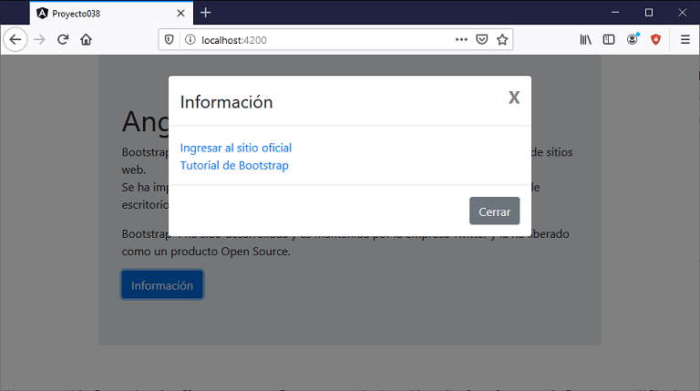
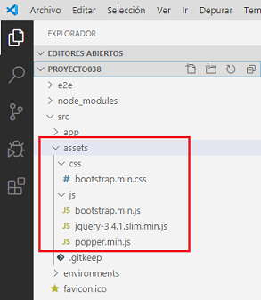

Bootstrap es un framework de CSS que nos facilita y estandariza el desarrollo de sitios web.
Veremos que hay varias maneras de utilizar el framework original de Bootstrap y en conceptos futuros veremos como instalar versiones de Bootstrap adaptadas directamente al ambiente de Angular.
Si todavía no ha trabajado con Bootstrap puede visitar el curso de Bootstrap 4 Ya.
Crearemos un proyecto nuevo para probar las distintas maneras de acceder a Bootstrap desde Angular:
ng new proyecto038
La forma más sencilla es utilizar un CDN donde se encuentre localizado los archivos *.css y *.js del framework de Bootstrap y sus dependencias (JQuery y Popper).
Debemos modificar el archivo 'index.html' disponiendo los enlaces a los archivos respectivos y con eso ya tenemos acceso al framework de Bootstrap en todo el proyecto:
<!doctype html> <html lang="en"> <head> <meta charset="utf-8"> <title>Proyecto038</title> <base href="/"> <meta name="viewport" content="width=device-width, initial-scale=1"> <link rel="icon" type="image/x-icon" href="favicon.ico"> <link rel="stylesheet" href="https://stackpath.bootstrapcdn.com/bootstrap/4.4.1/css/bootstrap.min.css"> </head> <body> <app-root></app-root> <script src="https://code.jquery.com/jquery-3.4.1.slim.min.js"></script> <script src="https://cdn.jsdelivr.net/npm/popper.js@1.16.0/dist/umd/popper.min.js"></script> <script src="https://stackpath.bootstrapcdn.com/bootstrap/4.4.1/js/bootstrap.min.js"></script> </body> </html>
Modifiquemos la componente que se ha creado por defecto y hagamos uso de las clases definidas en la librería de Bootstrap:
<div class="container">
<div class="jumbotron">
<h1>Angular con Bootstrap</h1>
<p>Bootstrap 4 es un framework de CSS que nos facilita y estandariza el desarrollo de sitios web.<br>
Se ha implementado pensando que se adapte tanto a las pantallas de equipos de
escritorio como a móviles y tablets.</p>
<p>Bootstrap 4 ha sido desarrollada y es mantenida por la empresa Twitter y la ha liberado como un producto Open
Source.</p>
<button type="button" class="btn btn-primary" data-toggle="modal" data-target="#dialogo1">Información</button>
<div class="modal fade" id="dialogo1">
<div class="modal-dialog">
<div class="modal-content">
<div class="modal-header">
<h4 class="modal-title">Información</h4>
<button type="button" class="close" data-dismiss="modal">X</button>
</div>
<!-- cuerpo del diálogo -->
<div class="modal-body">
<a href="https://getbootstrap.com/">Ingresar al sitio oficial</a><br>
<a href="https://tutorialesprogramacionya.com/bootstrap4ya">Tutorial de Bootstrap</a>
</div>
<!-- pie del diálogo -->
<div class="modal-footer">
<button type="button" class="btn btn-secondary" data-dismiss="modal">Cerrar</button>
</div>
</div>
</div>
</div>
</div>
Si ejecutamos la aplicación podemos ver que tenemos disponible la librería *.css de Bootstrap como también acceso a las funcionalidades de Javascript de: JQuery, popper y Bootstrap en si mismo (de todos los elementos de Bootstrap que requieren Javascript):
Si queremos tener los archivos de Bootstrap, JQuery y Popper en nuestro servidor y no en un CDN tenemos como primer alternativa descargarlos y copiar los archivos a la carpeta 'assets', luego tenemos los archivos en forma local:
Solo nos falta cambiar las url en el archivo 'index.html':
<!doctype html> <html lang="en"> <head> <meta charset="utf-8"> <title>Proyecto038</title> <base href="/"> <meta name="viewport" content="width=device-width, initial-scale=1"> <link rel="icon" type="image/x-icon" href="favicon.ico"> <link rel="stylesheet" href="assets/css/bootstrap.min.css"> </head> <body> <app-root></app-root> <script src="assets/js/jquery-3.4.1.slim.min.js"></script> <script src="assets/js/popper.min.js"></script> <script src="assets/js/bootstrap.min.js"></script> </body> </html>
Ya podemos ejecutar y tener el mismo resultado:
La tercer forma de instalar Bootstrap es empleando el gestor de paquetes de Node.Js
Desde la línea de comandos, en la carpeta raiz de nuestro proyecto procedemos a instalar los tres paquetes:
npm install bootstrap --save npm install jquery --save npm install @popperjs/core --save
La opción --save hace que npm incluya el paquete dentro de la sección de dependencies del archivo package.json en forma automática, lo que evita que tengamos que escribirlo en forma manual.
Si abrimos el archivo 'package.json' podemos ver que se han añadido las tres dependencias en nuestro proyecto:
{
"name": "proyecto038",
"version": "0.0.0",
"scripts": {
"ng": "ng",
"start": "ng serve",
"build": "ng build",
"test": "ng test",
"lint": "ng lint",
"e2e": "ng e2e"
},
"private": true,
"dependencies": {
"@angular/animations": "~9.0.0",
"@angular/common": "~9.0.0",
"@angular/compiler": "~9.0.0",
"@angular/core": "~9.0.0",
"@angular/forms": "~9.0.0",
"@angular/platform-browser": "~9.0.0",
"@angular/platform-browser-dynamic": "~9.0.0",
"@angular/router": "~9.0.0",
"@popperjs/core": "^2.0.6",
"bootstrap": "^4.4.1",
"jquery": "^3.4.1",
"rxjs": "~6.5.4",
"tslib": "^1.10.0",
"zone.js": "~0.10.2"
},
"devDependencies": {
"@angular-devkit/build-angular": "~0.900.1",
"@angular/cli": "~9.0.1",
"@angular/compiler-cli": "~9.0.0",
"@angular/language-service": "~9.0.0",
"@types/node": "^12.11.1",
"@types/jasmine": "~3.5.0",
"@types/jasminewd2": "~2.0.3",
"codelyzer": "^5.1.2",
"jasmine-core": "~3.5.0",
"jasmine-spec-reporter": "~4.2.1",
"karma": "~4.3.0",
"karma-chrome-launcher": "~3.1.0",
"karma-coverage-istanbul-reporter": "~2.1.0",
"karma-jasmine": "~2.0.1",
"karma-jasmine-html-reporter": "^1.4.2",
"protractor": "~5.4.3",
"ts-node": "~8.3.0",
"tslint": "~5.18.0",
"typescript": "~3.7.5"
}
}
Como último paso para poder utilizar Bootstrap en nuestro proyecto, debemos modificar el archivo 'angular.json' donde debemos especificar el path de los 4 archivos (en la propiedad 'build', en 'styles' indicamos el path donde se encuenta el archivo *.css y en 'script' los tres archivos respectivos, es importante el orden en que se importan los archivos Javascript):
{
"$schema": "./node_modules/@angular/cli/lib/config/schema.json",
"version": 1,
"newProjectRoot": "projects",
"projects": {
"proyecto038": {
"projectType": "application",
"schematics": {},
"root": "",
"sourceRoot": "src",
"prefix": "app",
"architect": {
"build": {
"builder": "@angular-devkit/build-angular:browser",
"options": {
"outputPath": "dist/proyecto038",
"index": "src/index.html",
"main": "src/main.ts",
"polyfills": "src/polyfills.ts",
"tsConfig": "tsconfig.app.json",
"aot": true,
"assets": [
"src/favicon.ico",
"src/assets"
],
"styles": [
"node_modules/bootstrap/dist/css/bootstrap.min.css",
"src/styles.css"
],
"scripts": [
"node_modules/jquery/dist/jquery.min.js",
"node_modules/@popperjs/core/dist/umd/popper.min.js",
"node_modules/bootstrap/dist/js/bootstrap.min.js"
]
},
"configurations": {
"production": {
"fileReplacements": [
{
"replace": "src/environments/environment.ts",
"with": "src/environments/environment.prod.ts"
}
],
"optimization": true,
"outputHashing": "all",
"sourceMap": false,
"extractCss": true,
"namedChunks": false,
"extractLicenses": true,
"vendorChunk": false,
"buildOptimizer": true,
"budgets": [
{
"type": "initial",
"maximumWarning": "2mb",
"maximumError": "5mb"
},
{
"type": "anyComponentStyle",
"maximumWarning": "6kb",
"maximumError": "10kb"
}
]
}
}
},
"serve": {
"builder": "@angular-devkit/build-angular:dev-server",
"options": {
"browserTarget": "proyecto038:build"
},
"configurations": {
"production": {
"browserTarget": "proyecto038:build:production"
}
}
},
"extract-i18n": {
"builder": "@angular-devkit/build-angular:extract-i18n",
"options": {
"browserTarget": "proyecto038:build"
}
},
"test": {
"builder": "@angular-devkit/build-angular:karma",
"options": {
"main": "src/test.ts",
"polyfills": "src/polyfills.ts",
"tsConfig": "tsconfig.spec.json",
"karmaConfig": "karma.conf.js",
"assets": [
"src/favicon.ico",
"src/assets"
],
"styles": [
"src/styles.css"
],
"scripts": []
}
},
"lint": {
"builder": "@angular-devkit/build-angular:tslint",
"options": {
"tsConfig": [
"tsconfig.app.json",
"tsconfig.spec.json",
"e2e/tsconfig.json"
],
"exclude": [
"**/node_modules/**"
]
}
},
"e2e": {
"builder": "@angular-devkit/build-angular:protractor",
"options": {
"protractorConfig": "e2e/protractor.conf.js",
"devServerTarget": "proyecto038:serve"
},
"configurations": {
"production": {
"devServerTarget": "proyecto038:serve:production"
}
}
}
}
}
},
"defaultProject": "proyecto038",
"cli": {
"analytics": false
}
}
Con este método no debemos modificar nada el archivo 'index.html':
<!doctype html> <html lang="en"> <head> <meta charset="utf-8"> <title>Proyecto038</title> <base href="/"> <meta name="viewport" content="width=device-width, initial-scale=1"> <link rel="icon" type="image/x-icon" href="favicon.ico"> </head> <body> <app-root></app-root> </body> </html>
Hemos presentado en este concepto las tres formas de integrar el Bootstrap original dentro de un proyecto Angular, el empleo de uno u otro depende de nuestra decisión. Veremos en los próximos conceptos algunos ejercicios empleando Angular y Bootstrap original.